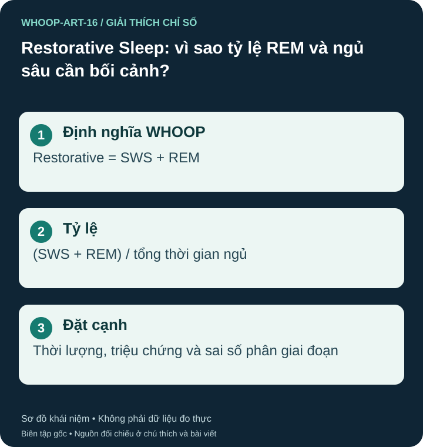

Đây là cách nhóm chỉ số của WHOOP
Restorative Sleep trong WHOOP là tổng thời gian ngủ sâu SWS và REM. Tỷ lệ tương ứng lấy tổng hai phần chia cho tổng thời gian ngủ, không phải thời gian trên giường. Đây là định nghĩa sản phẩm; không có nghĩa ngủ nông là vô ích. N1 và N2 là những giai đoạn NREM thật sự. S25 S20

Tỷ lệ có thể tăng khi tổng thời gian giảm
Ví dụ minh họa: ba giờ REM cộng SWS trong tám giờ ngủ bằng 37,5%; cùng ba giờ đó trong sáu giờ ngủ bằng 50%. Tỷ lệ cao hơn trong ví dụ không chứng minh đêm sáu giờ phục hồi tốt hơn. Đọc cả số giờ, mức buồn ngủ và điều kiện đo.
Không chấm bệnh bằng một phần trăm
Giai đoạn ngủ được ước tính từ cảm biến trên vòng tay, không được đo bằng sóng não. Nghiên cứu đối chiếu WHOOP với đa ký năm 2020 ghi nhận khả năng phân biệt ngủ/thức và phân bốn trạng thái khác nhau; không thể biến một kết quả gộp thành độ chính xác của mọi chỉ số hoặc mọi người dùng. S21
Một vài đêm tỷ lệ khác thường là lý do xem chất lượng dữ liệu và bối cảnh, chưa đủ để kết luận thiếu REM hay bệnh thần kinh. Các giai đoạn và phân bố ngủ cũng thay đổi theo tuổi và trong đêm. S20
Hãy ưu tiên cơ hội ngủ, lịch phù hợp và cảm giác hồi phục thực tế. Không tự mua thuốc hoặc thực phẩm bổ sung để đạt tỷ lệ SWS+REM cố định. Khi ngủ không hồi phục kéo dài, ngáy kèm ngưng thở hoặc buồn ngủ ảnh hưởng hoạt động, cần đánh giá chuyên môn.
Nguồn tham khảo và phạm vi hỗ trợ
- S25 — WHOOP. What is Restorative Sleep? [+How to Track it]. Phạm vi: WHOOP gộp SWS và REM thành Restorative Sleep; không coi tỷ lệ quảng bá là ngưỡng chẩn đoán.
- S20 — NHLBI / NIH. How Sleep Works: Sleep Phases and Stages. Phạm vi: NREM gồm N1, N2, N3; REM; N1 là ngủ, không phải thức.
- S21 — Miller DJ, Lastella M, Scanlan AT, et al. J Sports Sci. 2020;38(22):2631–2636.. A validation study of the WHOOP strap against polysomnography to assess sleep. PMID 32713257. DOI 10.1080/02640414.2020.1797448. Phạm vi: 12 người lớn khỏe mạnh, 86 lần ngủ; thử thuật toán/phần cứng tại thời điểm 2020; không đại diện mọi thế hệ.
Bài biên soạn độc lập bởi Pulse & Vitality; tài liệu WHOOP và các nguồn khác được dùng để tham khảo. Đăng ngày 2026-10-27; nguồn đối chiếu 2026-10-26. Nội dung giáo dục, không thay thế đánh giá, chẩn đoán hoặc điều trị y tế.